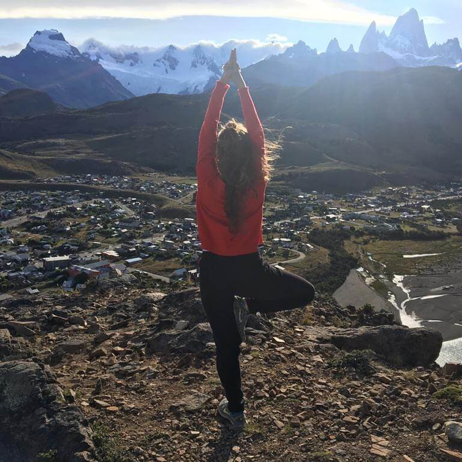
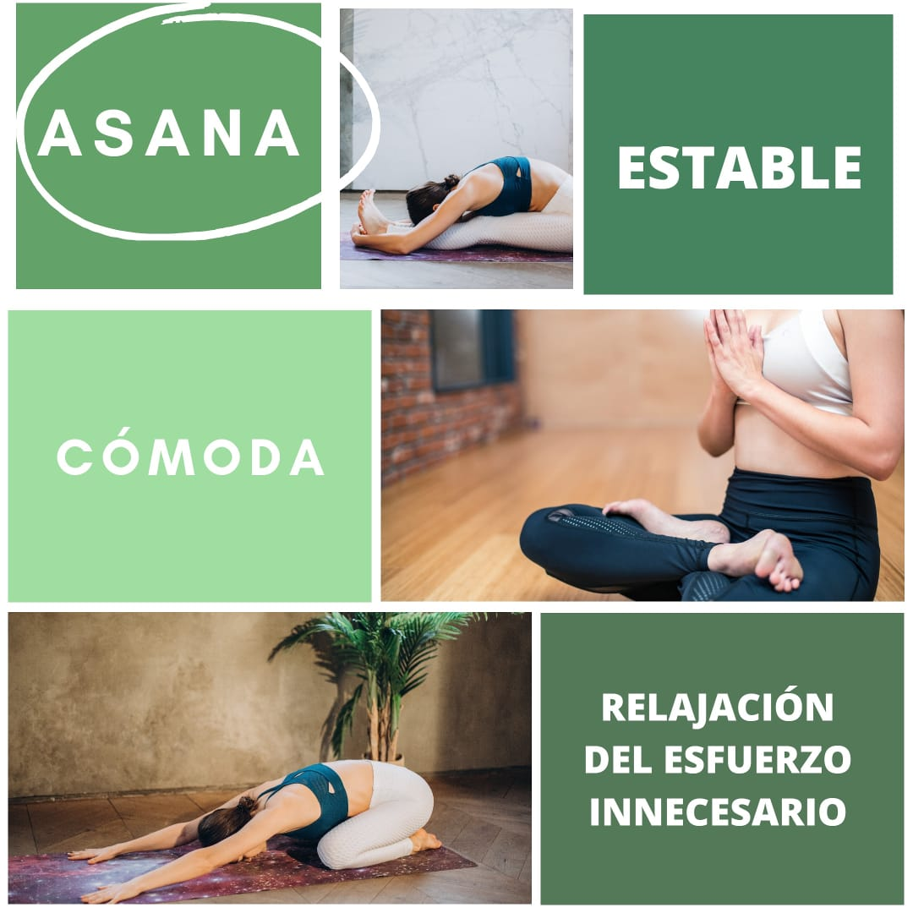
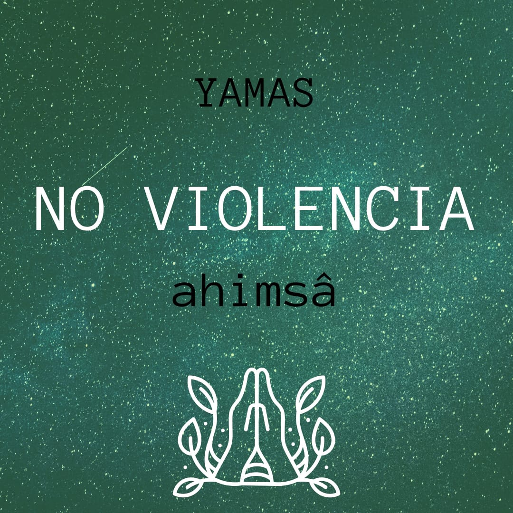
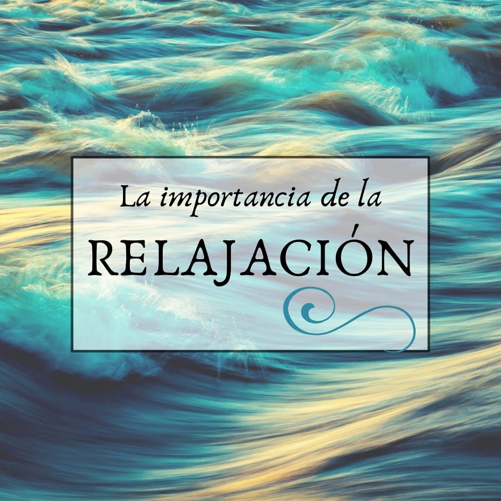
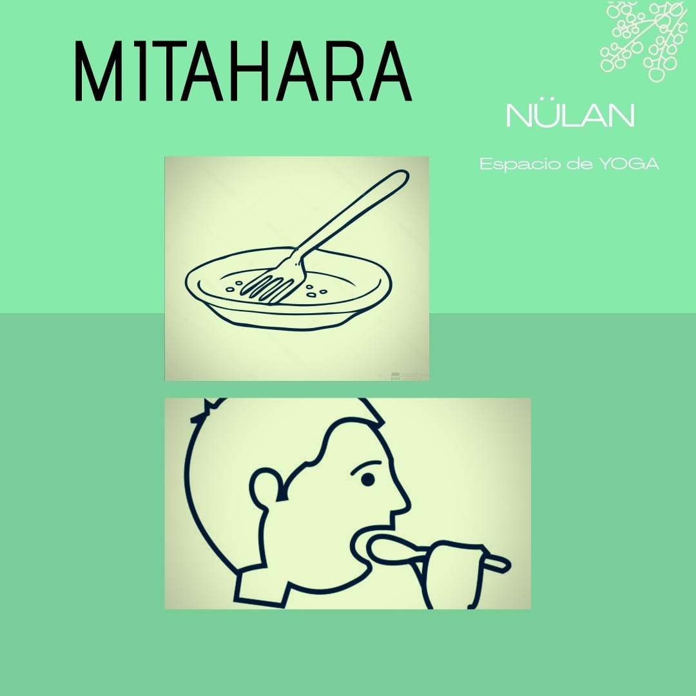

Mi formación y quién soy:
Noelia Mariel Mercuri
Mi formación comienza en el movimiento y la danza.
Desde muy chica, a los 4 años comencé a bailar (y lo sigo haciendo actualmente).
Desde los 18 años soy profesora de Danza Clásica y Danza Moderna. Trabajé con niños y adultos.
Mi primer acercamiento al yoga fue a los 19 años en unos seminarios de Yoga para bailarines, y a partir de ese momento comencé a interesarme en este maravilloso mundo.
Mas tarde comencé a practicar regularmente y encontré en el Yoga una gran herramienta de transformación personal.
En el año 2015 comencé mi primera formación oficial en el CEY (Centro de Eutonia y Yogaterapia Alicia Soutto), en el año 2017 obtuve el título de Instructora de Hatha Yoga, título internacional, avalado por Lonavla Yoga Institute (India)
Seguí formándome y en 2019 obtuve mi título en Yogaterapia (con elementos de Eutonia) (CEY)
Estoy en constantemente formación, a través de seminarios y practicas.
Las Clases
Se aborda el yoga no solo desde el aspecto físico (como mayormente es abordado en occidente) si no como una filosofía que incluye y busca integrar la mente, el cuerpo y el espíritu. La verdadera meta del Yoga es EL AQUIETAMIENTO DE LOS TORBELLINOS DE LA MENTE.
Las clases tienen como principal objetivo que cada alumno logre un trabajo sobre sí mismo ,de autoconocimiento (empezando por lo más tosco, el cuerpo, y luego ir profundizando y llegar a niveles más sutiles). Que sea capaz de reconocer sus propios límites y aprenda a respetar y cuidar su cuerpo.
No busco en el alumno una “imagen perfecta de âsana” si no, un “estado de âsana” en la cual tiene que haber relajación del esfuerzo, comodidad y estabilidad como características principales.
¿Cómo esta compuesta la clase?
- Asanas (posturas)
- Pranayama ( ejercicios respiratorios)
- Dhyana ( técnicas de meditación)
- Técnicas de Relajación
Modalidad Online
¿Qué necesitas?
- Una matt o colchoneta de yoga (podes sustituirla por una manta o una toalla)
- Un almohadón (si tenes varios tamaños mejor)
- Una manta para taparte
- Una computadora, tablet o celular con conexión a internet
Como debe ser el espacio
Busca un ambiente en el que puedas cerrar la puerta.
Que tenga espacio suficiente para poder moverte libremente sin chocarte con nada.
Prepara tu lugar un ratito antes de cada clase, podes poner un sahumerio, prender una velita, hacer de ese espacio un lugar cálido.
Cosas a tener en cuenta:
Durante toda la clase los micrófonos de los alumnos permanecen silenciados para mantener la intimidad de cada hogar, pero siempre que necesites consultar algo podes abrirlo para que el profesor te escuche.
Tenes la opción de apagar la cámara, aunque de esa manera el profesor no puede verte ni corregirte.
Algunas notas que te pueden interesar...

Mi nombre es Noelia Mariel.
Mi formación:
🌱Instrocturado en yoga tradicional, CEY, filial argentina del Lonavla Yoga Institute (India)
🌱 Instructorado en Yogaterapia y Eutonia, CEY Centro de Eutonia y Yogaterapia

El âsana es estable y cómoda o lo que contribuya a la estabilidad y
bienestar.
Por la relajación del esfuerzo y llevando la mente al infinito.
Entonces hay cesación de las perturbaciones provocadas por los pares de opuestos.
(Yoga Sutras Patanjali II, 46, 47 y 48)
- ❌ No hay que tironear
- ❌ No hay que forzar
EL ÂSANA DEBE CONTRIBUIR A UN ESTADO MENTAL TRANQUILO, Y NO GENERAR MAS PERTURBACIONES E INESTABILIDAD.

Los yamas (abstenciones) y niyamas (reglas) son los dos primeros aspectos del astânga yoga. Son el primer paso-requisito para la práctica del Yoga. No solo se trata de unas horas de práctica en la semana, si no que tenemos que trasladar el Yoga a todos los aspectos de la vida, ya que es una disciplina integral, de esta manera, es fundamental, primero, revisar nuestras actitudes.
Por eso acá les traigo el primero de los Yamas. Se los dejo en palabras de un gran maestro, Carlos Laporte.
AHIMSA- NO VIOLENCIA
Es el primero y fundamental de estos cinco yamas, todos los cuales están en relación con él.Todo esto entra dentro del precepto de la ahimsa, porque es esencialmente una actitud interior, no sólo algo externo. La intolerancia, la descortesía, el agravio verbal, un pensamiento de odio son formas de violencia e implican una gran energía que debemos canalizar en sentido contrario y poner al servicio de un camino espiritual.
No violencia es una forma de enfrentar la vida, no de huir de ella, es una forma de pararnos frente a la maldad tanto interna como externa, es una actitud esencial para el conocimiento y el cambio tanto personal como social.
No podemos ser violentos y al mismo tiempo ver nuestra realidad existencial, no podemos ser violentos si queremos lograr la serenidad de la mente, requisito para llevar una vida que nos aleje del sufrimiento y nos acerque a la felicidad y a nuestra verdadera esencia espiritual.
Establecerse en la no violencia es una característica de la aceptación de si mismo y sus limitaciones. La realidad nos dice que no somos perfectos, debemos aceptar esto en lugar de tapar con la violencia los límites que no soportamos tener o ver en los otros. El autoconocernos a través de un acto de verdad acerca de nosotros es esencial para poder crecer sin dañarnos.
La no violencia tiene no sólo consecuencias a nivel interno de paz y serenidad mental, sino que también tiene implicancias sociales. Por eso dice Patañjali “Cuando uno se establece firmemente en la no violencia, en su entorno (se da) la supresión de la hostilidad” (PYS II.35), de esto resulta una adecuada convivencia y armonía social.
(( Fragmento de texto de Carlos Laporte))

"Todo ser humano vive en umbrales muy altos de ansiedad. La ansiedad es una sensación difusa y displacentera que cursa como agitación, incertidumbre, angustia, tensión sobredimensionada, dispersión y malestar general. Aunque la ansiedad nos viene también dada por factores ansiógenos provenientes del exterior, hay una ansiedad que es el resultado de conflictos internos, tendencias ambivalentes, desorden psicológico y contradicciones que hierven en el subconsciente. La ansiedad, que es un síntoma derivado del desorden psíquico, origina tensiones, contracturas y nudos en la musculatura y afecta incluso a los órganos internos, las glándulas y humores orgánicos. Por su parte, la crispación muscular a su vez también insufla la ansiedad, la tensión excesiva y la agitación. O sea, la angustia mental y psicológica tensan la musculatura, y esta tensión a su vez engendra mayor agitación psicomental. Mente y cuerpo se corresponden, y el yoga, como precursor de la ciencia psicosomática, descubrió ya en sus orígenes que lo que afecta a la mente influye en el cuerpo, y viceversa. La relajación consciente calma los procesos psicofísicos, equilibra la unidad psicosomática y ayuda a resolver la ansiedad. Los yoguis desde siempre han dominado el arte y ciencia de la relajación. La profunda relajación del cuerpo tiende a tranquilizar la mente, como la armonía del contenido mental tiende a desbloquear el organismo. Pero la relajación es, además y sobre todo, una importantísima fuente de energía. Si aprendemos a relajarnos, no sólo no malgastaremos inútilmente nuestras mejores energías, sino que aprenderemos a economizarlas e incrementarlas."
( Fragmento de Relajacion y Respiracion de Ramiro Calle)

MITAHARA
**El hábito de la comida moderada**
Desde la visión yóguica es importante tener realmente conciencia de lo que comemos, tomamos, de todo aquello que ingresamos a nuestro organismo.}
Es importante que nuestros hábitos de consumo contribuyan a mantener nuestro cuerpo y mente equilibrados.
No se trata solo de qué comemos, sino también, de qué manera y en qué contexto lo hacemos.
Ya es sabido que la alimentación es parte fundamental de un organismo sano.
Es importante tomar CONCIENCIA de qué y cómo nos estamos alimentando.
- * ¿Sabes de dónde provienen tus alimentos?
- * ¿Conoces nutricionalmente qué te aportan?
- * ¿Sabés cuántos químicos estás consumiendo con cada alimento procesado?
- * ¿Le das importancia al momento de la comida? ¿Comes enojado, triste, apurado?
Son solo algunas preguntas,(el tema es inagotable) que espero sirvan de disparador para comenzar a adoptar una alimentación más consciente.